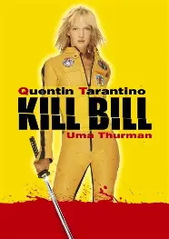
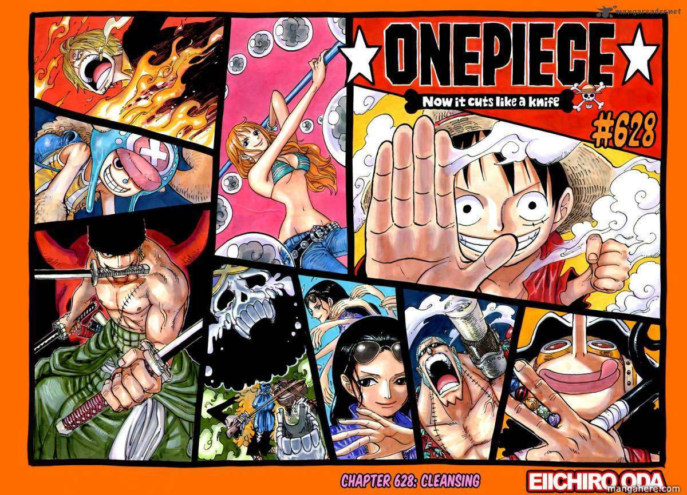

I really love movies, TV shows and anime. One of my favourite movies is Kill Bill. Every since I wathced that movie I fell in love with it and ended up watching it again after the first time. A fun fact about Kill Bill is that in the first volume the gang called The Crazy 88, you would expect that there would be 88 members but if you watch the film very carefully and count the amount of people in The Crazy 88 it actually sums up to only 56 people. And yes, I did count them all twice infact.
Since childhood I've always watch anime and its been a big part of my life in what I really like. My favourite anime is One Piece and its about a pirate named Luffy who sails through the Grand Line to be find the treasure the One Piece. Although this may sound like some typical kids TV show adventure this shows a tale of betrayal, friendship, love, generosity and many more conveying so much emotion to what some may call insignifiacnt. One Piece is more than just a story about a pirate sailing the seas, its a story you get lost in where you learn more about the world, achieving your dreams and aspirations, becoming strong to protect your loved ones. It's a story filled with adventure, laughter, tears and so much more and I think you should start wacthiing it too.
